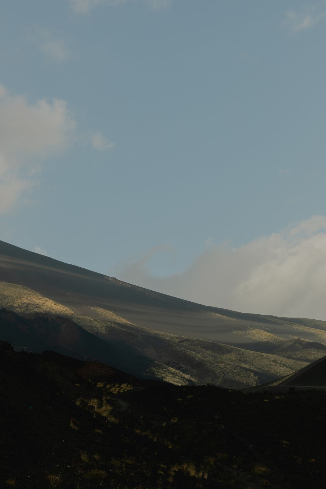
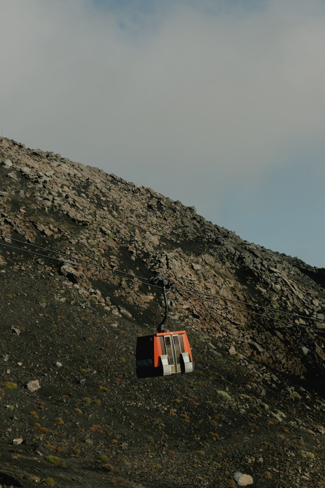
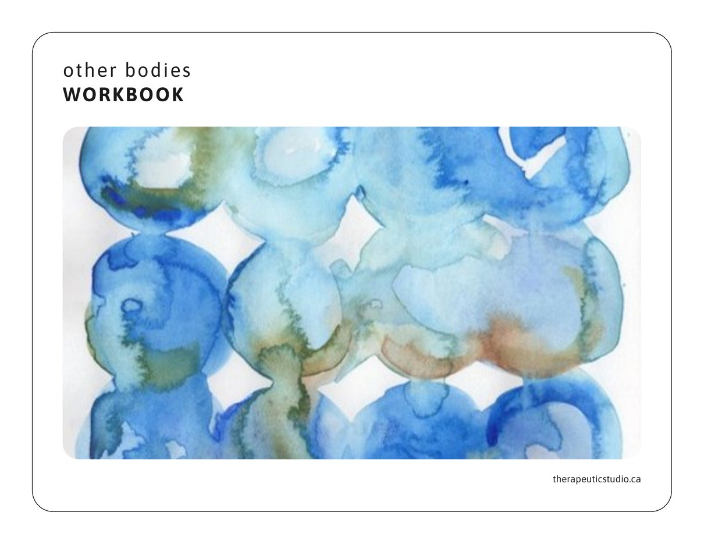

Therapeutic StudioA practice that waits for you
Anytime Sessions
These sessions are made especially for the ohHEY Creative Care Community. They’re for the days when showing up live isn’t possible: when your body, your energy, or your time zone has other plans. Nothing here expires. Come when you can, and leave when you need to.

How it works
Each session is about 25 minutes and follows the same gentle shape as our live sessions: one prompt, some watercolour blobs, and time to make alongside. The prompt can come from the Other Bodies workbook (PDF) or from your own practice. Press play whenever suits you. Pause as often as you like, or come back and finish another day.
What you’ll need
Any paper, any paint or marker, and a small cup of water. No experience required, and no right or wrong way to arrive.



Share what you made
These sessions have their own thread in the ohHEY Discord. If you’d like to, post what you made or how it went. If you’d rather keep it to yourself, that’s welcome too.
Suggest a prompt
These sessions are shaped by the community. If there’s a feeling or theme you’d like a session to keep company with, add it to the anytime sessions thread in Discord.
Access
Every session has captions and a written materials list. If something would make these easier for you to use, please tell me.



The Other Bodies workbook: fifty-two creative care prompts, each paired with a natural body, one feeling to a page. Choose whichever one your eye goes to first, or bring a prompt from your own practice.
Download the workbookWith thanks
Made with gratitude for the ohHEY Creative Care Community, founded by art therapist Shauna Kaendo.
A note on what this is. I’m a peer and a facilitator, not a therapist, and these sessions are a creative health practice, not therapy. If you need more support than a practice can offer, please reach out to someone you trust or a health professional.